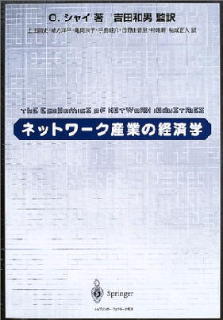

| Books | Journal articles | Book articles | Op-ed | Recent articles | Unpublished | Affiliations | Teaching | Family | Contact |
| My
face | My
ears | My family
09 | My
family 10
| My
family 12
| My family
14
| My family 16
| My
Acropolis | My
ancestors |
| My
parents | My partners |
My Jacuzzi | My
house(W) | My
house(S) | My scooters | My car |
My
parking | My violins |
| My sticks | My elephant | My airplane I | My airplane II | My boat | My
kayak | My kickbike
I | My kickbike II | My shower |
| My business | My
turtle | My
stroller | My
chick | My chair | My
alpaca | My sledge | My
snowman |
|
How
to Price: A Guide to Pricing |
||
| Cambridge University Press, 2008. | Cambridge University Press, 2001. | The MIT Press, 1996. |
| ISBN: 978-0-521-71564-5, Table of Contents | ISBN: 0-521-80500-7, Table of Contents | ISBN: 0-262-69179-5, Table of Contents |
| [448 pages, 63 illustrations, 95 tables, | [329 pages, 56 illustrations, 23 tables] | [466 pages, 112 illustrations, 17 tables] |
| 38 computer algorithms, 77 problems/solutions] | Instructor's/Solution Manual (41p, 2008/12) | Instructor's/Solution Manual (60p, 2018/2) |
| Errata: 1st Printing | Errata: 1st, 2nd to 6th, 7th+ Printing | Errata: 1st--2nd, 3rd, 4th, 5th--8th, 9th--11th, |
| Web applications (Experimental & Incomplete) | Practice Problem Sets (17p), Solutions (20p) | Practice Problem Sets (33p), Solutions (44p) |
Discount and other online bookstores that
carry the English titles: Alibris, AbeBooks, Amazon, B&N
| China (2002) | Japan (2003) | Taiwan (2004) | China (2005) |
|  | |||
| Shanghai
U. of Finance & Econ China-Pub, Errata by Kangning Li |
Springer-Tokyo Press | Yeh Yeh Book Gallery | Tsinghua
University Press China-Pub |
| ISBN: 7-81049-773-1/F 662 | ISBN: 4-431-71003-5 | ISBN: 957-8555-89-X | ISBN: 7-302-10612-6 |
Shy. O. "How Currency
Denomination and the ATM Affect the Way We Pay." Journal
of Economics and Business, Forthcoming. Data
source. Edited data and R-code.
Shy, O. and R. Stenbacka. "Active
Investors, Passive Investors, and Common Ownership. American
Economic Association Papers and
Proceedings, 110, Forthcoming.
Shy, O. and R. Stenbacka. "An OLG Model of Common Ownership: Effects on Consumption and Investments." Journal of Macroeconomics, 62, December 2019.
Shy, O. and R. Stenbacka. "Bank Competition, Real Investments, and Welfare." Journal of Economics, 127(1), June 2019, 73–90.
Chen, H., K. Huynh, and O. Shy. "Cash Versus Card: Payment Discontinuities and the Burden of Holding Coins." Journal of Banking & Finance, 99, February 2019, 192–201. Presentation.
Shy, O. and R. Stenbacka. "Anti-Poaching Agreements in Labor Markets." Economic Inquiry, 57(1), January 2019, 243–263.
Shy, O. and R. Stenbacka. "Dynamic Labor Market Competition and Wage Seniority." International Journal of Industrial Organization, 61, November 2018, 130–154.
Greene, C., M. Rysman, S. Schuh, and O. Shy. "Costs and Benefits of Building Faster Payment Systems: The U.K. Experience." Capco Institute Journal of Financial Transformation, 47, April 2018.
Shy, O. and R. Stenbacka. "An Overlapping Generations Model of Taxpayer Bailouts of Banks." Journal of Financial Stability, 33, December 2017, 71–80.
Gayer, A. and O. Shy. "A Welfare Evaluation of Tying Strategies." Research in Economics, 70(4), December 2016, 623–637.
Shy, O., R. Stenbacka, and V. Yankov. "Limited Deposit Insurance Coverage and Bank Competition." Journal of Banking & Finance. 71, October 2016, 95–108.
Shy, O., R. Stenbacka, and D. Zhang. "History-based versus Uniform Pricing in Growing and Declining Markets," International Journal of Industrial Organization, 48, September 2016, 88–117.
Shy, O. and R. Stenbacka. "Customer Privacy and Competition." Journal of Economics & Management Strategy, 25(3), Fall 2016, 539–562.
Shy, O. "Do Tips Increase Workers' Income? "Management Science, 61(9), September 2015, 2041–2051.
Melnik, A. and O. Shy. "Exclusion, Competition, and Regulation in the Retail Loan Market." Journal of Banking & Finance, 52, March 2015, 189–198.
Shy, O. and J. Stavins. "Merchant Steering of Consumer Payment Choice: Evidence from a 2012 Diary Survey." Journal of Behavioral & Experimental Economics, 55, April 2015, 1–9.
Greene, C. and O. Shy. "E-cash and Virtual Currency as Alternative Payment Methods." Journal of Payments Strategy & Systems, 8(3), Autumn/Fall 2014, 274–288.
Shy, O. "Measuring Some Effects of the 2011 Debit Card Interchange Fee Reform." Contemporary Economic Policy, 32(4), October 2014, 769–783.
Briglevics, T. and O. Shy. "Why Don’t Most Merchants Use Price Discounts to Steer Consumer Payment Choice?" Review of Industrial Organization, 44(4), June 2014, 367–392.
Shy, O. and J. Stavins. "Merchant Steering of Consumer Payment Choice: Lessons Learned From Consumer Surveys." Survey Methods: Insights from the Field, April 2014.
Shy, O. and R. Stenbacka. "Investment in Customer Recognition and Information Exchange." Information Economics & Policy, 25(2), June 2013, 92–106.
Gehrig, T., O. Shy, and R. Stenbacka. A Welfare Evaluation of History-Based Price Discrimination. Journal of Industry, Competition & Trade, 12(4), 2012, 373–393.
Shy, O. "Real Estate Brokers and Commission: Theory and Calibrations." Journal of Real Estate Finance & Economics,45(4), November 2012, 982–1004. Data.
Shy, O. and R. Stenbacka. "Efficient Organization of Production: Nested versus Horizontal Outsourcing." Economics Letters, 116(3), September 2012, 593–596.
Shy, O. "Account-to-Account Electronic Money Transfers: Recent Developments in the United States." Review of Network Economics, 11(1), March 2012, Article 3.
Schuh, S., O. Shy, J. Stavins, and R. Triest. "An Economic Analysis of the 2011 Settlement Between the Department of Justice and Credit Card Networks." Journal of Competition Law & Economics, 8(1), March 2012, 107–144.
Gehrig, T., O. Shy, and R. Stenbacka. "History-based Price Discrimination and Entry in Markets with Switching Costs: A Welfare Analysis." European Economic Review, 55(5), June 2011, 732–739.
Shy, O., and Z. Wang. "Why Do Card Networks Charge Proportional Fees?" American Economic Review, 101(4), June 2011, 1575–1590.
Shy, O. "A Short Survey of Network Economics." Review of Industrial Organization, 38(2), March 2011, 119–149.
Shy, O. "Consistent Bargaining." Economics Bulletin, 30(2), May 2010, 1425–1432.
Forshner, Z. and O. Shy. "Constant Best-Response Functions: Interpreting Cournot." International Journal of Business & Economics, 8(1), 2009, 1–6.
Shy, O. "Measuring the Cost of Making Payment Decisions." Journal of Socio-Economics, 37(6), December 2008, 2411–2416.
Ringbom, S., and O. Shy. "Refunds and Collusion in Service Industries." Journal of Economics & Business, 60(6), Nov.-Dec. 2008, 502-516.
Melnik, A., O. Shy, and R. Stenbacka. "Assessing Market Dominance." Journal of Economic Behavior & Organization, 68(1), October 2008, 63–72.
Shy, O. and R. Stenbacka. "Price Competition, Business Hours, and Shopping Time Flexibility." Economic Journal, 118(531), August 2008, 1171–1195.
Shy, O. and R. Stenbacka. "Rethinking the Roles of Banks: A Call for Narrow Banking." The Economists' Voice, 5(2), June 2008, Article 6.
Shy, O. and R. Stenbacka. "Liquidity Provision and Optimal Bank Regulation." International Journal of Economic Theory, 3(3), September 2007, 219–233.
Shy, O. "Dynamic Models of Religious Conformity and Conversion: Theory and Calibrations." European Economic Review, 51(5), July 2007, 1127–1153.
Gayer, A. and O. Shy. "Publishers, Artists, and Copyright Enforcement." Information Economics & Policy, 18(4), November 2006, 374–384.
Shy, O. and R. Stenbacka. "Service Hours with Asymmetric Distributions of Ideal Service Time." International Journal of Industrial Organization, 24(4), July 2006, 736–771.
Shy, O. and R. Stenbacka. "Partial Outsourcing, Monitoring Cost, and Market Structure." Canadian Journal of Economics, 38(4), November 2005, 1173–1190.
Ringbom, S. and O. Shy. "Advance Booking, Cancellations, and Partial Refunds," Economics Bulletin, 13(1), 1–7, 2004.
Shy, O. and R. Stenbacka. "Market Structure and Risk Taking in the Banking Industry," Journal of Economics, 82(3), July 2004, 249–280.
Hassin, O. and O. Shy. "Code-Sharing Agreements, and Interconnections in Markets for International Flights." Review of International Economics, 12(3), August 2004, 337–352.
Ringbom, S., O. Shy, and R. Stenbacka. "Optimal Liquidity Management and Bail-out Policy in the Banking Industry," Journal of Banking & Finance, 28(6), June 2004, 1319–1335.
Gayer, A. and O. Shy. "Copyright Protection and Hardware Taxation," Information Economics & Policy, 15(4), December 2003, 467–483.
Gayer, A. and O. Shy. "Internet and Peer-to-Peer Distributions in Markets for Digital Products," Economics Letters, 81(2), November 2003, 51–57.
Shy, O. and R. Stenbacka. "Market Structure and Diversification of Mutual Funds," Journal of Financial Markets, 6(4), August 2003, 607-624.
Issman-Weit, E. and O. Shy. "Pricing of Library Subscriptions with Applications to Scientific Journals," Journal of Economics & Business, 55(2), March-April 2003, 197–218.
Shy, O. and R. Stenbacka. "Strategic Outsourcing." Journal of Economic Behavior & Organization, 50(2), February 2003, 203–224.
Ringbom, S. and O. Shy. "The "Adjustable-Curtain" Strategy: Overbooking of Multiclass Service," Journal of Economics, 77(1), 2002, 73–90.
Shy, O. and J. Tarkka. "The Market for Electronic Cash Cards," Journal of Money, Credit, & Banking, 34(2), May 2002, 299–314.
Shy, O. "A Quick-and-Easy Method for Estimating Switching Costs," International Journal of Industrial Organization, 20(1), January 2002, 71–87.
Grilo, I., O. Shy, and J. Thisse. "Price Competition When Consumer Behavior is Characterized by Conformity or Vanity, Journal of Public Economics, 80(3), June 2001, 385–408.
Gandal, N. and O. Shy, "Standardization Policy and International Trade," Journal of International Economics, 53(2), 2001, 363–383.
Shy, O. "Exporting as a Signal For Product Quality," Economica, 67(1), February 2000, 79–90.
Shy, O. and J. Thisse, "A Strategic Approach to Software Protection," Journal of Economics & Management Strategy, 8(2), Summer 1999, 163–190.
Berechman, J., S. Poddar, and O. Shy. "Network Structure and Entry in the Deregulated Airline Industry," Keio Economic Studies, 35(2), January 1998, 71–82.
Shy, O. "Technology Revolutions in the Presence of Network Externalities," International Journal of Industrial Organization, 14(6), October 1996, 785–800.
Horn, H., and O. Shy. "Bundling and International Market Segmentation," International Economic Review, 37(1), February 1996, 51–69.
Chou, C., and O. Shy. "Do Consumers Always Gain When More People Buy the Same Brand?" European Journal of Political Economy, 12(2), September 1996, 309–330.
Fishman, A., N. Gandal, N., and O. Shy. "Planned Obsolescence as an Engine of Technological Progress, Journal of Industrial Economics, 41(4), December 1993, 361–370.
Chou, C., and O. Shy. "Partial Compatibility and Supporting Services," Economics Letters, 41(2), January 1993, 193–197.
Chou, C., and O. Shy. "The Crowding-Out Effects of Long Duration of Patents," The RAND Journal of Economics, 24(2), Summer 1993, 304–312.
Chou, C., and O. Shy. "Technology Revolutions and the Gestation of New Technologies," International Economic Review, 34(3), August 1993, 631–645.
Lee, F., and O. Shy. "A Welfare Evaluation of Technology Transfer to Joint Ventures in the Developing Countries," The International Trade Journal, 7(2), Winter 1992, 205–220.
Chou, C., and O. Shy. "A Model Technology Gap, Product Cycle, and the Process of Catching up Between the North and the South," Economics Record,67(198), September 1991, 217–226.
Chou, C., and O. Shy. "An Overlapping Generations Model of Self-Propelled Growth," Journal of Macroeconomics, 13(3), Summer 1991, 511–521.
Chou, C., and O. Shy. "Intra-Industry Trade and the Variety of Home Products, "The Canadian Journal of Economics, 24(2), May 1991, 405–416.
Chou, C., and O. Shy. "New Product Development and the Optimal Duration of Patents," Southern Economic Journal, 57(3), January 1991, 811–821.
Chou, C., and O. Shy. "Network Effects Without Network Externalities," International Journal of Industrial Organization, 8(2), June 1990, 259–270.
Shy, O. "External Effects and Pareto Inferior Trade," Southern Economic Journal, 56(1), July 1989, 56–63.
Shy, O. "A General Equilibrium Model of Pareto Inferior Trade," Journal of International Economics, 25(1/2), August 1988, 143–154.
Shy, O. "Strategies for Network Industries," in: C. Thomas and W. Shughart II (eds.) The Oxford Handbook of Managerial Economics, Oxford University Press, 2013. ISBN: 9780199782956, Ch.14: 302–324.
Gayer, A., and O. Shy, "Copyright Enforcement in the Digital Era," in: M. Peitz and G. Illing (eds.) Industrial Organization and the Digital Economy, MIT Press, 2006. ISBN: 0-262-09041-4, Ch.8: 229–240.
Heimer, O., and O. Shy, "Code-Sharing Agreements, Frequency of Flights, and Profits Under Parallel Operation," in: D. Lee (ed.) Advances in Airline Economics, Volume 1: Competition Policy and Anti-trust, Elsevier, 2006. ISBN: 0-444-51843-6, Ch.7: 163–181.
Shy, O., "Industrial Organization," in: A. Kuper and J. Kuper (eds.) The Social Science Encyclopedia (3rd edition), Routledge, 2005, ISBN: 0-415-32096-8.
Shy, O., "The Economics of Copy Protection in Software and Other Media," in: B. Kahin, and H. Varian (eds.) Internet Publishing and Beyond: The Economics of Digital Information and Intellectual Property, MIT Press, 2000. ISBN: 0-262-61159-7; Ch.5: 99–113.
Berechman, J., and O. Shy, "The Structure of Airline Equilibrium Networks," in: J. van den Bergh, P. Nijkamp, and P. Rietveld (eds.) Recent Advances in Spatial Equilibrium Modelling: Methodology and Applications, Springer, 1996; ISBN: 3-540-60708-0; Ch.7: 138–155.
Fed's focus on 'too big to fail' won't save taxpayers from next bank bailout. The Conversation, July 8, 2016.
Why 2015 was a bad year for banking reforms. Fortune Magazine, December 31, 2015. MIT Sloan video.
Let 2016 be the year we agree tipping is terrible for both workers and customers. Quartz, December 30, 2015. MIT Sloan video.
Time has come for narrow banking, TheMarker, October 6, 2008 (Heb).
Shy. O. "Low-Income
Consumers and Payment Choice." Data
source. Edited data and
R-code.
Shy. O. "Consumer Use of Multiple Payment Methods." Data source. Edited data and R-code.
Shy. O. "Cashless Stores and Cash Users." Presentation. Data source. Edited data and R-code.
Shy. O. "Colonel Blotto Games with Reserved Troops."
Shy. O. "Colonel Blotto Games with Switching Costs."
Shy, O. and R. Stenbacka. "Common Ownership, Institutional Investors, and Welfare." Presentation.
Greene, C., M. Hitczenko, B. Prescott, and O. Shy. "U.S. Consumers' Use of Personal Checks: Evidence from a Diary Survey." Federal Reserve Bank of Atlanta, Research Data Report No. 20–1, (2020).
Shy, O. "Tips Versus Higher Wages: Data, Theory, and Simulations." Data and R-code. Presentation.
Greene, C. and O. Shy. "How Consumers Get Cash: Evidence from a Diary Survey." Federal Reserve Bank of Atlanta, Research Data Report No. 19–1, (2019).
Shy, O. "Alternative Methods for Studying Consumer Payment Choice." Data source. Edited data and R-code. Presentation. Poster.
Shy, O. and R. Stenbacka. "Ring-fencing, Lending Competition, and Taxpayer Exposure." Presentation.
Shy, O. and D. Zhang. "Minimum Wage as a Focal Point."
Morgan, P. and O. Shy. "Undercut-Proof Equilibria With Multiple Firms." Older version: "Undercutproof Equilibria." (31p).
Clougherty, J., M. Grajek, and O. Shy. "Taking 'Some' of the Mimicry Out of the Adoption Process: Quality-Management and Strategic Substitution." CEPR Discussion Paper No. 11661. ESMT Working Paper No. 16-05. SSRN.
Greene, C. and O. Shy. "How Are U.S. Consumers Using General Purpose Reloadable Prepaid Cards? Are They Being Used as Substitutes for Checking Accounts?" Federal Reserve Bank of Boston, Research Data Report No. 15-3, (2015).
Schuh, S. and O. Shy. "U.S. Consumers' Adoption and Use of Bitcoin and other Virtual Currencies."
Shy, O. "Window Shopping." Presentation.
Shy, O. "Application Fees and Assessment Errors." Non-technical summary.
Shy, O. and J. Stavins. "Merchant Steering of Consumer Payment Choice: Evidence from a 2012 Diary Survey." Federal Reserve Bank of Boston, Research Department Working Paper No. 14–1, (2014). Revised on SSRN.
Shy, O. "How Many Cards Do You Use?" Federal Reserve Bank of Boston, Research Department Working Paper No. 13–13, (2013). SSRN version.
Schuh, S., O. Shy, and J. Stavins. "Who Gains and Who Loses From Credit Card Payments: Theory and Calibrations." Federal Reserve Bank of Boston, Research Department Public Policy Discussion Paper No. 10–3, (2010). Presentation.
Shy, O. and R. Stenbacka, "Efficient Organization of Production: Nested versus Horizontal Outsourcing." Federal Reserve Bank of Boston, Research Department Working Paper No. 09–9, (2009). Note: A shorter version has been published in Economics Letters.
Shy, O. "Person-to-Person Electronic Funds Transfers: Recent Developments and Policy Issues." Federal Reserve Bank of Boston, Research Department Public Policy Discussion Paper No. 10–1, (2010).
Shy. O. ""Relevant" Markets: A Product Differentiation Approach." (10p).
Gantman, N. and O. Shy, "Broadcasting Competition and Advertising Quality: A Two-sided Market Approach." (18p).
Melnik, A. and O. Shy, "Admission Standards and Tuition in the Market for Professional Graduate Education." (3.0p).
Shy, O. and R. Stenbacka, "Entry Barriers and Antitrust Objectives." (8p).
Ringbom, S. and O. Shy, "Advance Booking and Refunds Under Capacity Constraints." (23p). Presentation
Ringbom, S. and O. Shy, "Reservations, Refunds, and Price Competition." (29p). Presentation
Gal, M., and O. Shy, "The Monopoly." the economics part of a chapter in M. Gal and M. Perlman (eds.), forthcoming book on Israeli Antitrust, (Hebrew, 26p, 2003/07/25).
Shy, O. and J. Tarkka, "Stock Exchange Alliances, Access Fees, and Competition." (28p). Working Paper Version: Bank of Finland Discussion Papers 22/2001. Presentation
Aluf, Y. and O. Shy, "Comparison-Advertising and Competition." (9p).
Shy, O. and R. Stenbacka, "A Bundling Argument for Narrow Banking." (33p).
Navon, A., O. Shy, and J. Thisse, "Product Differentiation in the Presence of Positive and Negative Network Effects." Center for Economic Policy Research (CEPR), Discussion Paper No.1306, December 1995.
Shy, O., "Why 99 Cents?" (13p).
Shy, O., "Digital Convergence, Competition, and Antitrust Law." (12p).
Shy, O., "A Dynamic Model of Targeted Advertising." (25p).
Shy, O., "Integration and International Standardization." (16p).
Shy, O., "A Welfare Evaluation of Antidumping Rules." (21p).
Chou, C., J. Melmed-Sanjak, and O. Shy, "The Environment and International Trade." (16p).
Chou, C. and O. Shy, "Supporting Services and the Choice of Compatibility." (21p).
Chou, C. and O. Shy, "Knowledge Accumulation and Novelty: Who Should Be Getting the Credit for an Idea?" (10p).
Shy, O., "Dynamic Peak-Load Pricing." (13p).
Editorial Boards: International Journal of Industrial Organization: (Editor: 2002—2004, Associate Editor: 2005—2020), Journal of Economic Behavior & Organization: (Associate Editor: 2004—2006) , The Review of Network Economics: (Board member: 2001—2015).
Academic Degrees: High School, 1973; B.A. (Hebrew University of Jerusalem, 1980); Ph.D. (University of Minnesota, 1986); Honorary Doctorate (Hanken School of Economics, 2014).
FAA Pilot Licenses: Private (1987); Instruments Rating (1989); Commercial (2011); Remote Pilot sUAS (2017).
Academic Citations: Google Scholar, Talks and Conferences: List.
|
|
|
|
|
|
|
|
|
|
|
|
|
|
|
|
Lecture Notes (39p, 1999).
Reforming the banking industry: Narrow banking, Limited-purpose banking, Equity financing, End of banking, Finance in 8 minutes (video)
Economics & Related: Game Theory, Lecture notes online, Online textbooks, Textbook prices, How-to-Price, MIT Online Economics, CAL in Economics, Openstax College, Quantitative Economics, Stand-up Economist,
Online Mathematics & General: Webmath, Mathworld, Calc101, Binomial, Stat, MIT Online Courseware,
|
|
Sarah's Web-page, Books by Hadassa Shy,
E-mail Address: ozshy@ozshy.com
In a rare case of a failure, you can send
e-mail messages to ozshyMail@gmail.com
(forwarding to/from the above e-mail address).
If all fails, use ozBackup@yahoo.com.
{kind=link}
{kind=link}
{kind=link}
{kind=link}
{kind=link}
{kind=link}
{kind=link}
{kind=link}
{kind=link}
{kind=link}
{kind=link}
{kind=link}
{kind=link}
{kind=link}
{kind=link}
{kind=link}
{kind=link}
{kind=link}
{kind=link}
{kind=link}
{kind=link}
{kind=link}
{kind=link}
{kind=link}
{kind=link}
{kind=link}
{kind=link}
{kind=link}
{kind=link}
{kind=link}
{kind=link}
{kind=link}
{kind=link}
{kind=link}
{kind=link}
{kind=link}
{kind=link}
{kind=link}
{kind=link}
{kind=link}
{kind=link}